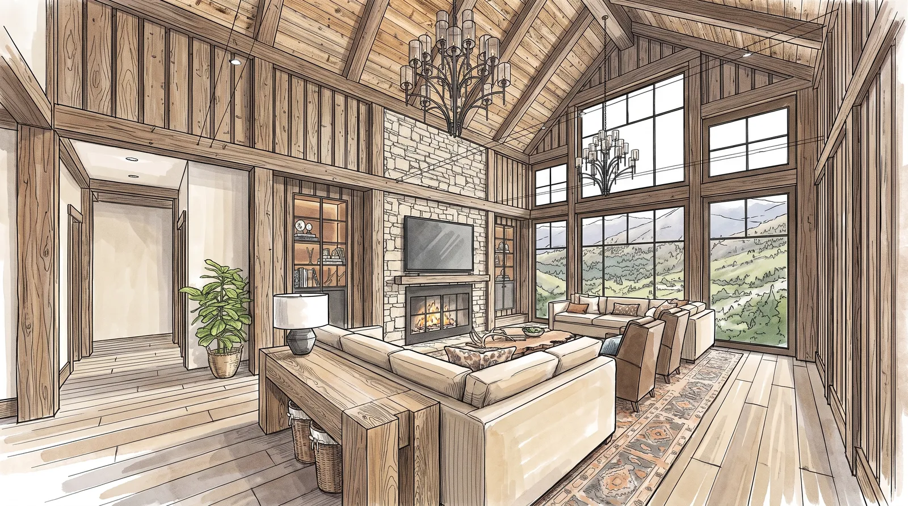
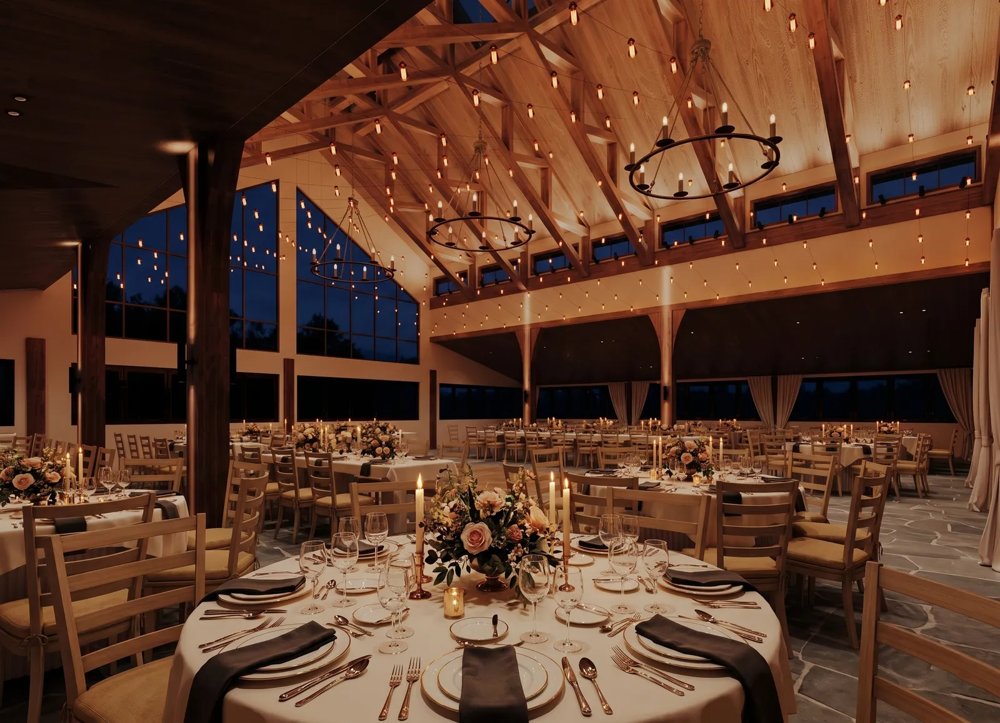
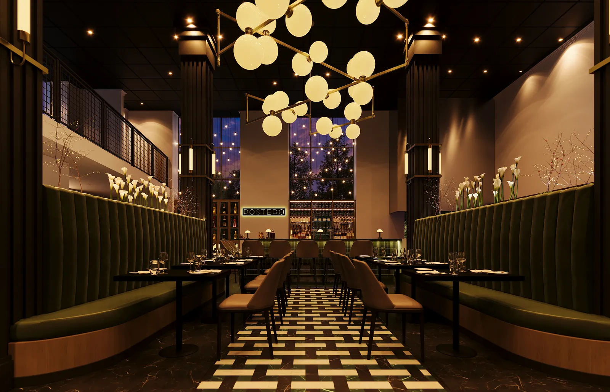
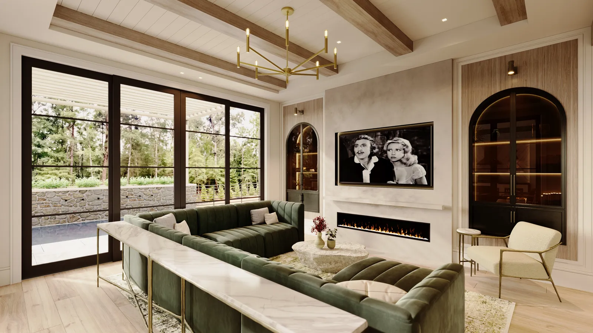
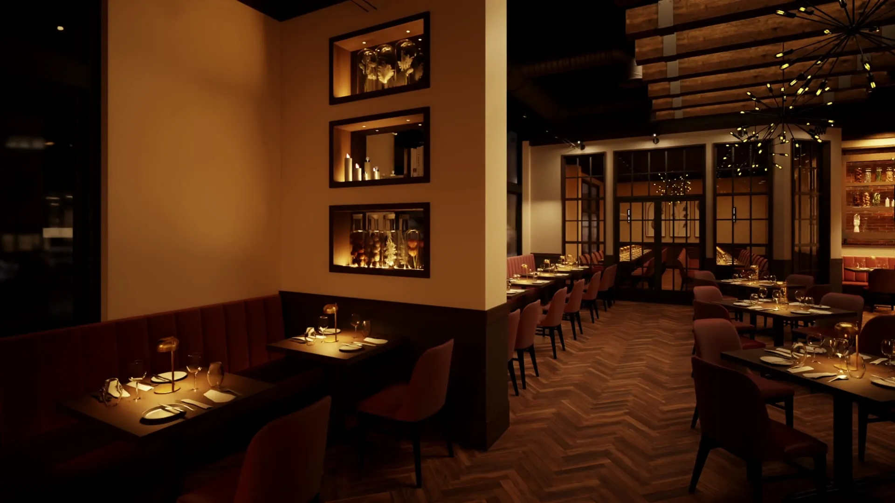
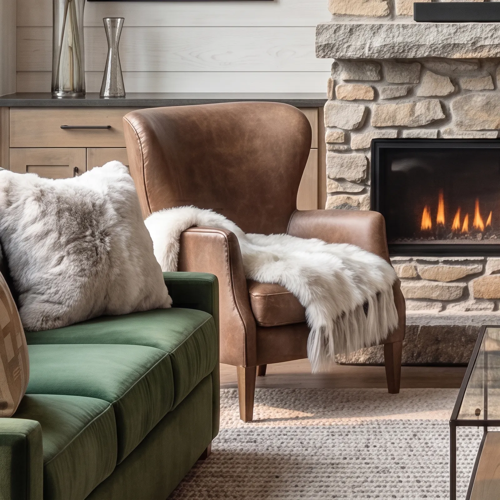

From drawingto light.
Photoreal renderings and films for interior designers, architects and home builders, built from your drawings and real specifications.
Mountain residence, great roomMove across the image to see the drawingPress and hold to see the drawing
Tovizy is the studio of Alex and Alexandra Lane. Since 2013 we have rendered American homes, kitchens and restaurants for the designers and architects who drew them.

- Completed projects
- More than 200
- First views
- In 5–7 business days
- Revisions
- Two rounds included
- Clients
- United States, Italy, Singapore
Selected work
All 17 projects
Kitchens
Kitchens, several projects. Contemporary, farmhouse, shaker.
10 views
Posana Restaurant & Bar
Restaurant interior. Herringbone oak, wine walls, a cage chandelier.
8 views and a film
Transitional Home
Residential interior. Plaster arches, beamed ceilings, day and evening.
10 views
Board-and-Batten Farmhouse
Exterior. Board and batten, standing-seam roofs, stone.
4 views
Hillside Farmhouse
Residential interior. Timber trusses, fieldstone, shiplap.
6 views
Mountain Modern Residence
Exterior. Dark timber, stone, standing-seam roofs.
1 view
Timber-Frame Event Venue
Event venue. Timber trusses, flagstone, string lights.
10 views
Postero Restaurant & Wine Bar
Restaurant interior. Green velvet, lit wine displays, patterned stone.
7 views
Modern Farmhouse
Residential interior. White oak, steel windows, green velvet.
10 viewsIndex
Every project on the site, with the number of views in each.

Walk through it before it is built.
Posana Restaurant & Bar, Asheville. 44 seconds, with sound.
Sell the house before it is built.
For home builders we render exteriors from your elevation drawings, tour every plan room by room, and put the whole community on one map where buyers choose a lot and walk through the home that fits it.


How a room comes to light
One model, four stages. You approve each before the next begins, so changes stay small. The images follow the bar at Posana from plan to final.
The drawings
You send plans, elevations and the finish schedule as PDF, DWG or SketchUp. Product links help us match the real pieces.
The model
We build the space in 3D and send untextured views. Cameras, proportions and millwork are agreed before any styling.
The materials
Your finishes, fabrics and fixtures go on, modeled to their real dimensions.
The light
We light the room for the hour you choose, refine the image and deliver in 4K. Two rounds of revisions are included.
One model, many palettes
Once the room is modeled, we can show your client eight directions in a day using AI-assisted variations. They choose one, and we finish it in 3D with the real products.
The numbered variations are concepts. The final image is a finished render.
 Finished render: sage and cream cabinetry with brass pendants
Finished render: sage and cream cabinetry with brass pendantsCommissions
Eight ways to work with us. Every fee is quoted from your drawings, usually within one business day.
Concept sprint
Two or three mood concepts generated with AI in 48 hours, clearly labeled as concepts. The fee is credited toward the 3D work.
48 hoursSingle view
One finished interior or exterior view, with two rounds of revisions.
5–7 business daysPresentation set
Three to five views of one space in day and evening light, with custom furniture modeled.
7–10 business daysFilm and motion
A 30 to 60 second 4K walkthrough film, or a short motion reel animated from your approved views for social media.
Scheduled per projectVirtual model home
360° panoramas of every room of a plan, joined into one tour with a floor plan. It opens on phones, computers and VR headsets.
Quoted per planInteractive community
A clickable map of your community: lot status, the homes that fit each lot, a tour of every plan and an inquiry form that names the lot. See the demo
Quoted per communityDesign partner
A monthly bank of 20 or 40 hours with priority in our schedule and a lower hourly rate. Every change is estimated in hours before we start, and you get a weekly report.
OngoingBrand scenes
Room scenes and catalog images for furniture and lighting brands, built from your CAD files or product photos.
Quoted per collectionWhat clients say
Working with this team has transformed how we present our architectural concepts to clients. The photorealistic quality and attention to detail in every render allows our designs to speak for themselves before a single brick is laid.
The level of craftsmanship in these visualizations is extraordinary. They capture not just the space, but the emotion and atmosphere I envision for each project. My clients can truly see and feel their future homes.
Exceptional quality and professionalism. The renders are so realistic that clients often mistake them for photographs. This has significantly improved our project approval rates and client satisfaction.
Collaborating across continents has never been easier. The team understands European design sensibilities perfectly, delivering renders that capture the essence of Italian craftsmanship and modern elegance.

The studio
Alex has rendered interiors and architecture since 2013 for designers in the United States, Italy and Singapore, and has worked with Stratton Design Group in Asheville since 2020. Alexandra runs projects and client presentations. Every project passes through both of us.
We spend most of our time on light. A room only reads as real when the daylight, the lamps and the shadows behave the way they will in the finished house.
We are a remote studio and travel often, so we work with clients wherever they are and schedule calls around their time zone.
- Rendering since
- 2013
- Studio
- Remote, working with clients worldwide
- Tools
- 3ds Max, Corona, V-Ray, Unreal Engine, Photoshop, AI-assisted refinement
- Delivery
- 4K stills, 4K films, 360° panoramas
Questions
What do you need to start?
Floor plans and elevations as PDF or DWG, a finish schedule or product links, and a moodboard if you have one. A SketchUp or 3ds Max model saves time but isn't required.
How fast is it?
First views of one room in 5–7 business days, a set of three to five in 7–10. Rush delivery in 48 hours is available.
How are fees set?
Every commission is quoted from your drawings: the number of views, the detail in the space and the deadline. You receive a fixed quote, usually within one business day, before any work begins.
How do revisions work?
Each package includes two consolidated rounds: you send one list of changes per round. Studios with frequent changes usually move to the design partner plan, where every change is estimated in hours first.
Can you match exact products?
Yes. Send links or model numbers. When a manufacturer has no 3D model, we build the piece from its dimensions and photos.
Do you use AI?
Yes, after the 3D work. Every space is built in 3D from your drawings, and you approve the model first. We then use AI-assisted tools to refine light and texture, retouch, and generate quick palette variations, which are always labeled as concepts.
Do you work with home builders?
Yes. We render exteriors from your elevation drawings, 360° tours of each plan and interactive community maps, so buyers can choose a lot and walk through a home before it is built. The Cedar Hollow demo shows how it works.
Do you sign NDAs?
Yes. We are glad to sign your NDA before you send drawings, and we never publish a confidential project.
Can I share the renders?
Yes. Use them in client presentations, marketing and your own portfolio, with or without credit to us.
Begin with the drawings.
Tell us about the project and send what you have. We reply with a quote and a schedule within 24 hours.
- contact@tovizy.com
- @tovizystudio
- Tovizy